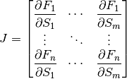
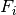
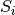

Stability Analysis¶
The stability of a biochemical system is determined by the eigenvalues of the Jacobian matrix. Given
 floating species and
floating species and  reactions, the Jacobian matrix is defined as follows:
reactions, the Jacobian matrix is defined as follows:

where  is the ith differential equation and  the ith floating species. From roadRunner it is easy to obtain the Jacobian matrix using the command:
Jac = rr.getFullJacobian()
which returns the Jacobian matrix in the variable Jac.
It is possible for full Jacobian to be singular. In these situations one should call instead the related method, getReducedJacobian().